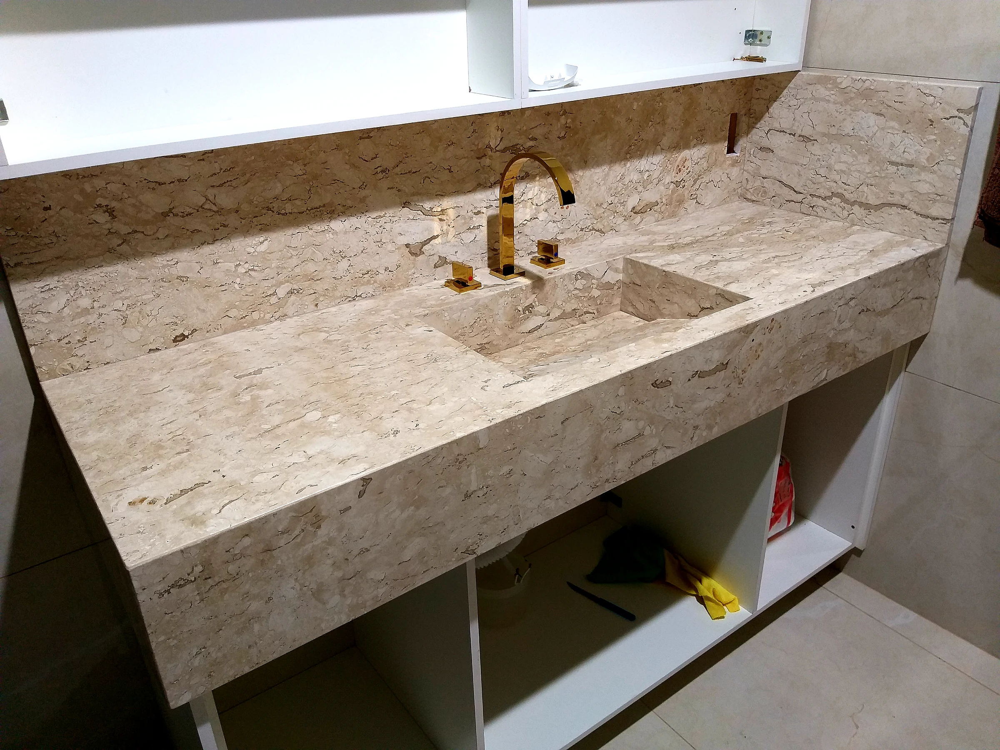
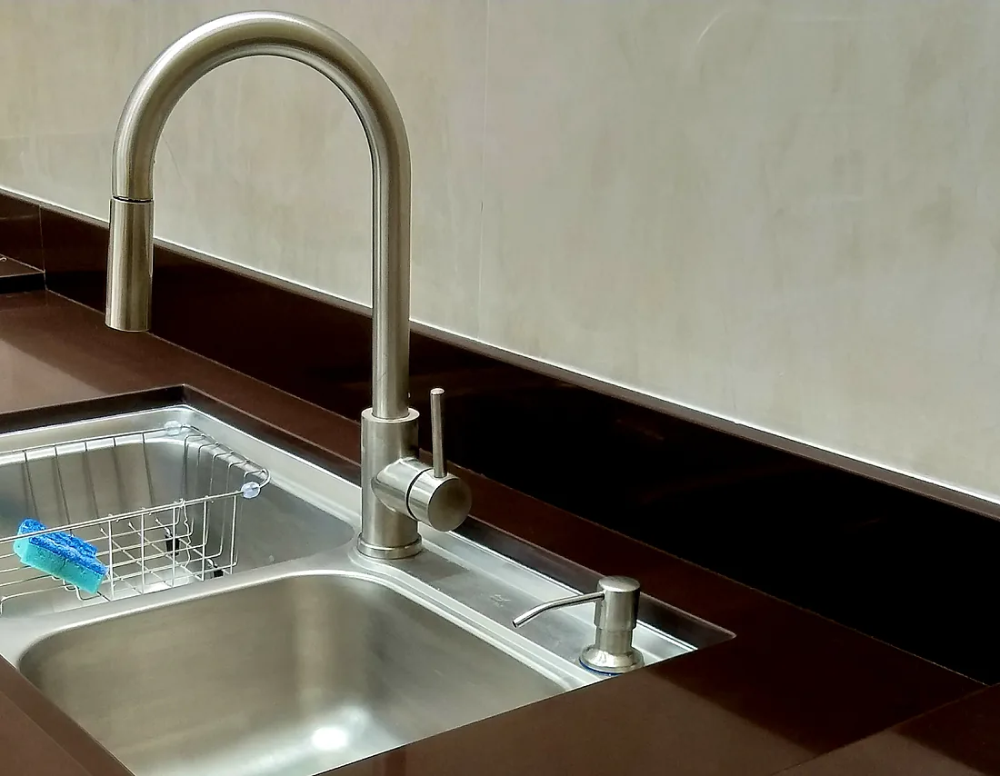
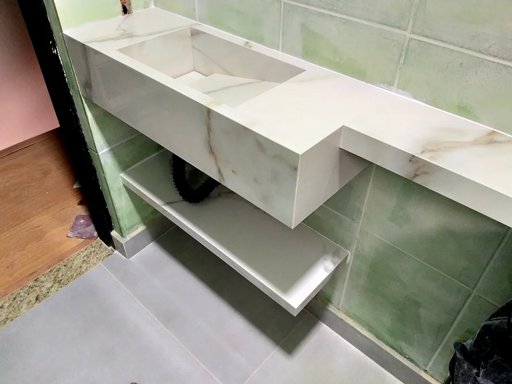
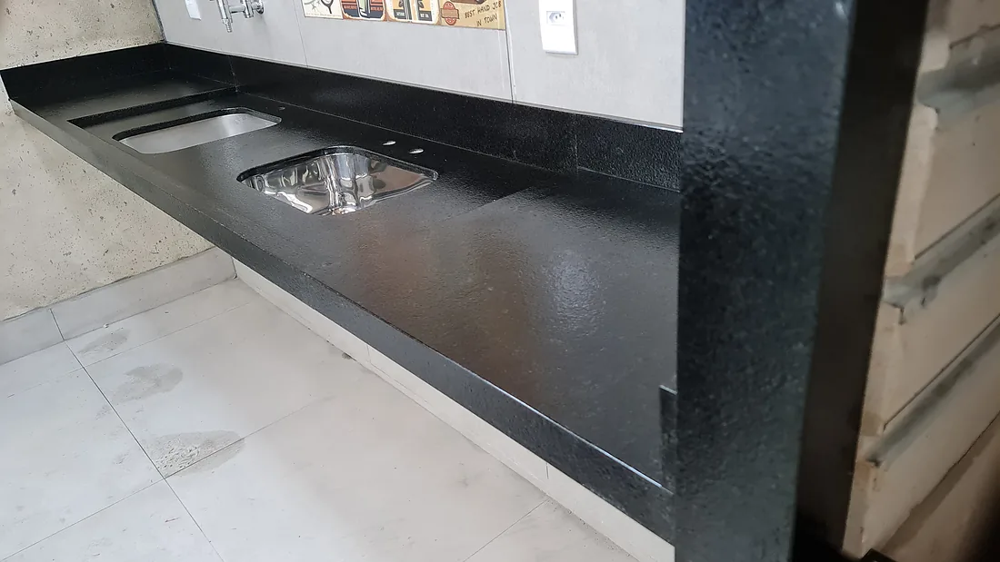
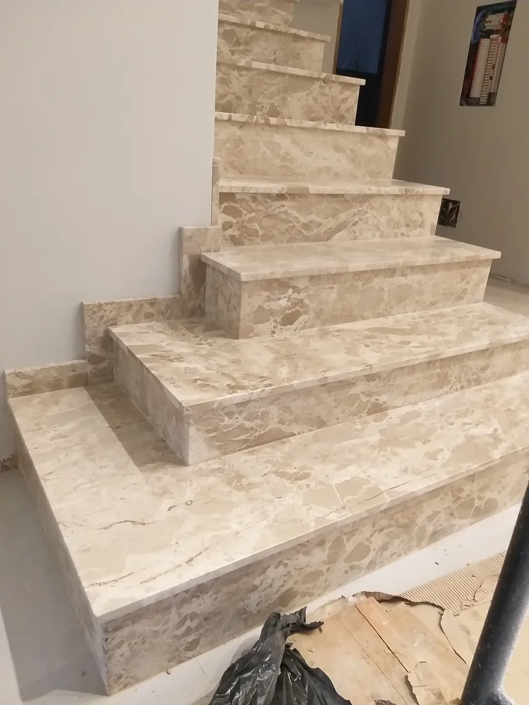
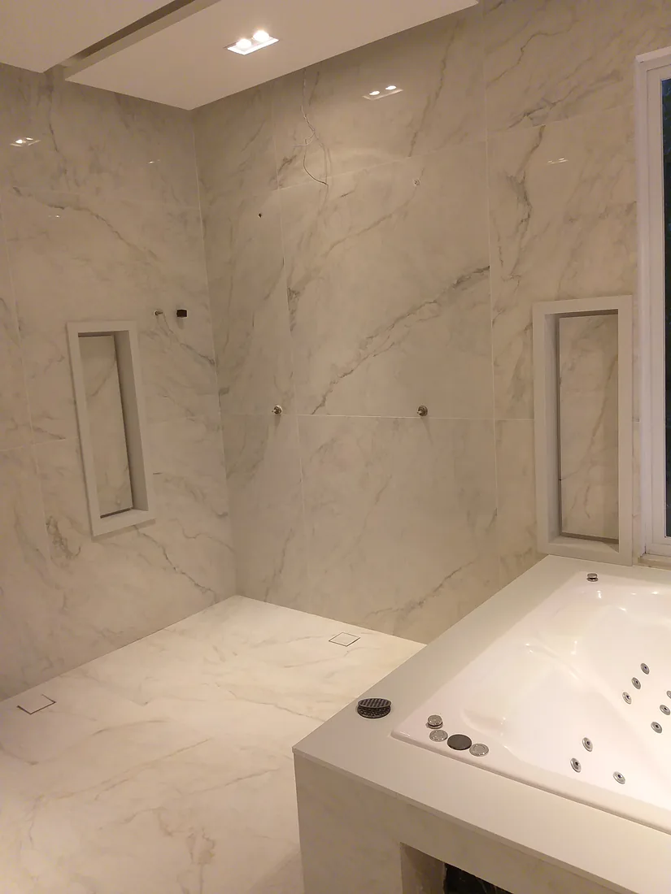
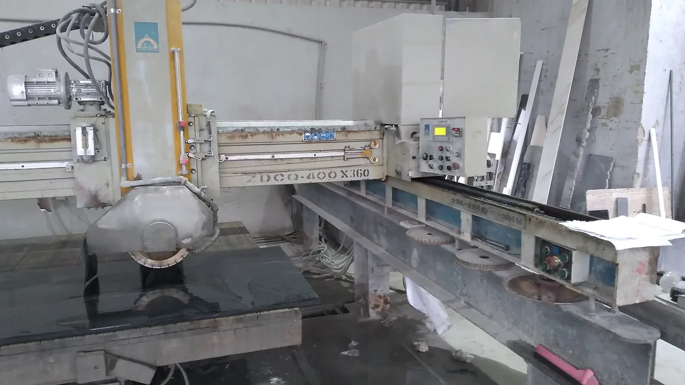

Data combinada é data cumprida
Prazo é a primeira pergunta de quem contrata. Aqui a resposta é cumprir o que foi combinado.
Pias, bancadas, lavatórios, escadas e revestimentos em pedra, produzidos e instalados na região de Vargem Grande Paulista (SP).

Escolha um serviço para ver um trabalho nosso.
Também fazemos: revestimento de lareiras, bordas de piscina, soleiras e peitoris.





Prazo é a primeira pergunta de quem contrata. Aqui a resposta é cumprir o que foi combinado.
Cada tipo de obra pede uma pedra diferente. Selecionamos o material de acordo com o que você vai fazer.
Mande as medidas ou o projeto pelo WhatsApp e receba o orçamento sem demora.
Produção e instalação organizadas, do corte à entrega.
A marmoraria nasceu do trabalho do Cleiton, que foi ganhando espaço no mercado um trabalho de cada vez.
O que a gente entrega é a realização do sonho e a transformação do ambiente.
Cleiton começou trabalhando para outra empresa e, com o tempo, assumiu cada vez mais responsabilidade.
Surgiu um primeiro contato para fechar um serviço, e ele fez. Pouco tempo depois, veio o segundo.
Trabalho entregue virou novo contato, e o espaço no mercado foi crescendo aos poucos.
Ao perceber que era capaz de ter algo próprio, e que gostava de lidar com o cliente, Cleiton decidiu abrir o próprio negócio.
Há quase dois anos trabalhando por conta própria, Cleiton é dono da marmoraria e participa da produção e da venda.
Cada peça é produzida e instalada pela nossa equipe, com a obra organizada e o prazo combinado do início ao fim.

Toque em uma foto para ampliar.
Orçamento rápido, material certo para cada projeto e data cumprida para não atrasar o cronograma da obra.
Para quem quer transformar o ambiente e realizar o sonho da casa, com orçamento rápido e a pedra certa para cada trabalho.
Preencha em menos de um minuto. Você cai direto no WhatsApp da Freitas com tudo o que preencheu.
Trabalhamos com datas combinadas e cumprimos o que combinamos. O prazo de cada obra é informado junto com o orçamento, de acordo com o projeto.
O preço depende do material, das medidas e do tipo de trabalho. Envie o projeto ou as medidas pelo WhatsApp e receba o orçamento rápido.
Trabalhamos com materiais bons, selecionados para cada tipo de trabalho. Conte o que você quer fazer e indicamos a pedra mais adequada.
Pias, balcões, lavatórios, bancadas, escadas, revestimentos de lareiras, bordas de piscina, revestimentos de banheiras e ofurô, soleiras e peitoris.
De segunda a quinta, das 8h às 18h, e na sexta, das 8h às 17h.
Sim. Arquitetos e engenheiros são parte importante do nosso público, e o orçamento rápido ajuda a manter o cronograma da obra.